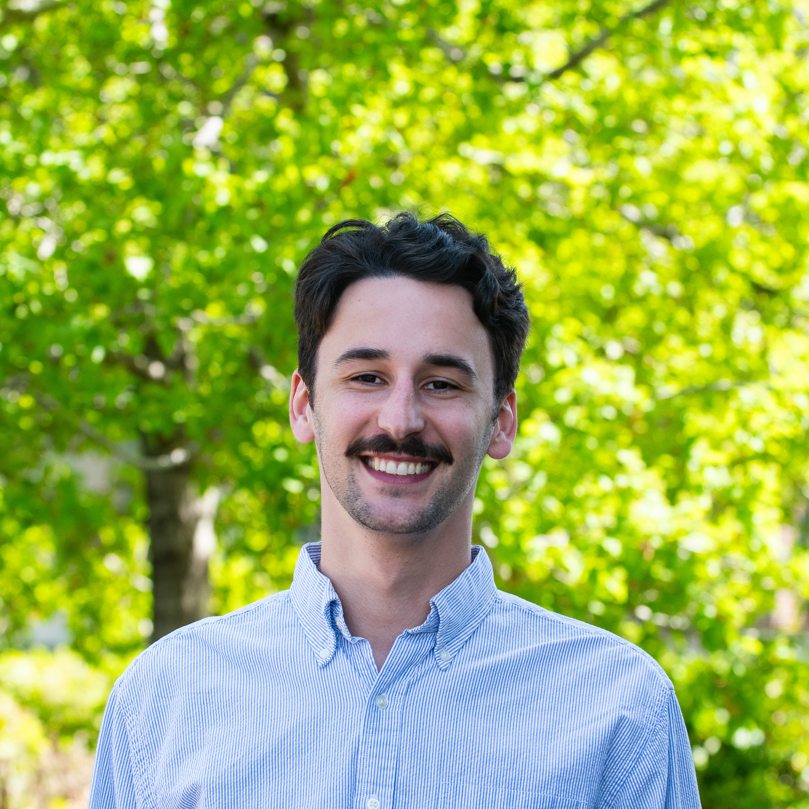

Autonomy & Counter-Autonomy Researcher at Sandia National Laboratories, specializing in multi-agent robotics, reinforcement learning, and computer vision.
About
Originally from St. Louis, Missouri. I hold an MS in Computer Science (Robotics) and a BS in Computer Science from the University of Denver, where I spent three years as a Graduate Research Assistant in the ARISE Lab. I now work at Sandia National Laboratories as an Autonomy & Counter-Autonomy Researcher, focusing on autonomous testing, physical security evaluation, and adversarial robotics.
Experience
Sandia National Laboratories — Albuquerque, NM
University of Denver — ARISE Lab
U.S. Army DEVCOM Army Research Laboratory — Adelphi, MD
University of Denver — ARISE Lab
Trimble Inc. — Westminster, CO
Centene Corporation — St. Louis, MO
Education
University of Denver — Ritchie School of Engineering & Computer Science
University of Denver
Minors in Entrepreneurship Management and Mathematics. Dean's List.
Publications
Ori A. Miller, Jason M. Gregory, Christopher Reardon · IEEE SSRR · November 2024
Christopher Reardon, Jason M. Gregory, Kerstin S. Haring, Benjamin Dossett, Ori A. Miller, Aniekan Inyang · ACM Transactions on Human-Robot Interaction (THRI) · 2023
Ori A. Miller, Christopher Reardon, Jason M. Gregory · Heterogeneity in Multi-Robot Systems Workshop, ICRA · London, UK · May 2023
Ori A. Miller, Christopher Reardon · Heterogeneous Multi-Robot Cooperation in Extreme Environments Workshop, ICRA · London, UK · May 2023
Projects
Real-time tracking and mapping of objects in physical space, combining computer vision with spatial computing.
A client-server file transfer system built in Java. High school independent study exploring networking and distributed systems.